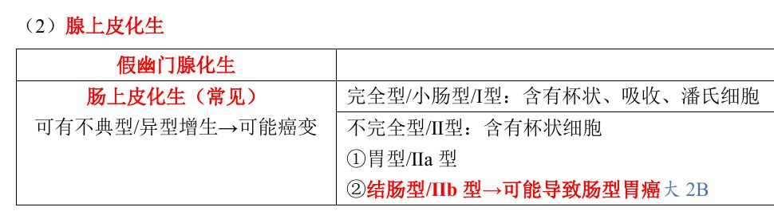
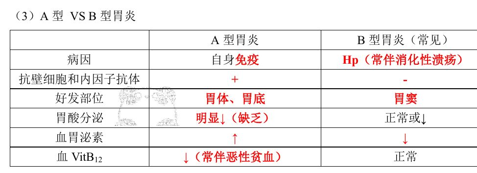
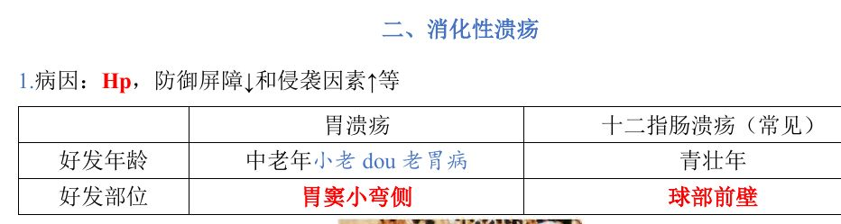
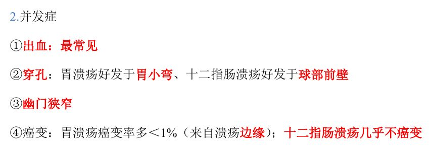
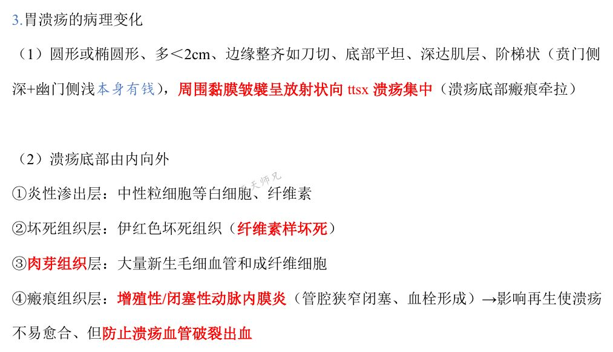
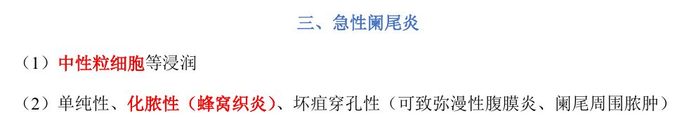
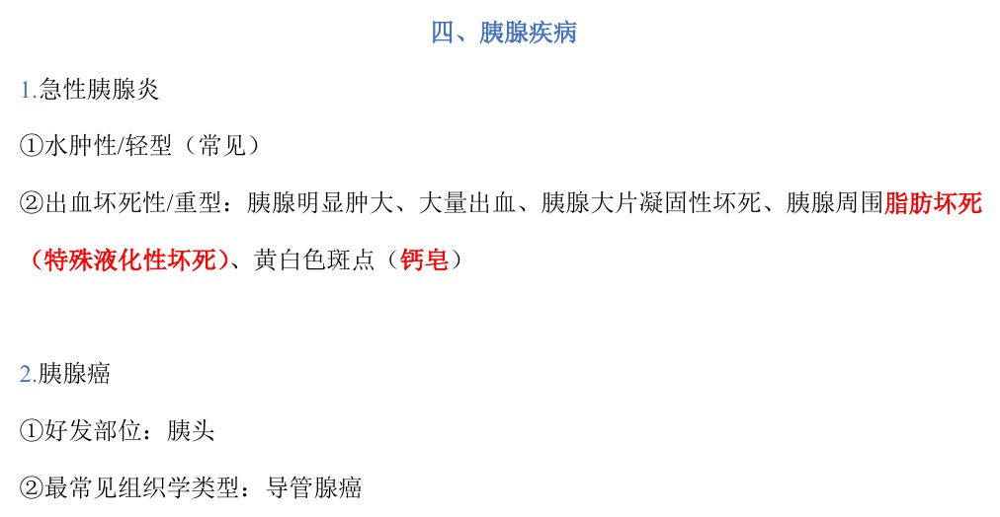

考研西综 · 病理学 · 学成选择题
第01课｜慢性胃炎、消化性溃疡、阑尾炎、胰腺疾病
用法：A型题点选项即判；X型题先多选、再点【判卷】；答完自动展开解析。刷完本课再过一遍底部【本课速记卡】，效果最好。
一、慢性胃炎13 题
A型·单选Q1P1 · 非萎缩性胃炎
慢性非萎缩性（浅表性）胃炎的主要病变特点是
答案与解析
答案：A
非萎缩性／浅表性／单纯性胃炎以胃窦常见，病变为黏膜浅层的淋巴细胞和浆细胞浸润（A 对）。大量中性粒细胞浸润是急性炎／化脓性炎的特点（B 错）；腺体萎缩、数目减少是萎缩性胃炎的标志（D 错）；纤维素渗出见于假膜性炎等（C 错）。
📖 讲义定位：P1 · 非萎缩性胃炎
📷 讲义原图 · P1 · 非萎缩性胃炎
A型·单选Q2P1 · 萎缩性胃炎特征
下列哪项不是慢性萎缩性胃炎的典型黏膜改变
答案与解析
答案：D
萎缩性胃炎：黏膜变薄、皱襞变浅，黏膜下血管清晰可见；腺体变小和减少；胃小凹变浅及囊性扩张，伴淋巴细胞、浆细胞浸润和纤维化。D（皱襞粗大肥厚、呈脑回状）是肥厚性胃炎类病变的描述，不属于萎缩性胃炎。
📖 讲义定位：P1 · 萎缩性胃炎特征
📷 讲义原图 · P1 · 萎缩性胃炎特征
A型·单选Q3P1 · 萎缩性胃炎特征
慢性萎缩性胃炎病程较长者，胃黏膜内可形成的结构是
答案与解析
答案：B
讲义原文：黏膜内淋巴细胞和浆细胞浸润，病程长者可形成淋巴滤泡，并伴纤维化（B 对）。其余结构均非本病的规律性改变。
📖 讲义定位：P1 · 萎缩性胃炎特征
📷 讲义原图 · P1 · 萎缩性胃炎特征
A型·单选Q4P2 · 腺上皮化生
完全型（小肠型／Ⅰ型）肠上皮化生的上皮细胞组成是
答案与解析
答案：C
完全型／小肠型／Ⅰ型肠化含杯状、吸收、潘氏细胞（C 对）；不完全型／Ⅱ型仅含杯状细胞（B 是不完全型的描述）；壁细胞、主细胞为胃体腺固有细胞（D 错）。
📖 讲义定位：P2 · 腺上皮化生

📷 讲义原图 · P2 · 腺上皮化生
A型·单选Q5P2 · 腺上皮化生
肠上皮化生中，与肠型胃癌发生关系较密切的是
答案与解析
答案：A
讲义：结肠型／Ⅱb 型化生可能导致肠型胃癌（讲义记法：『大 2B』——Ⅱb 与癌变关系大）。假幽门腺化生是另一种腺上皮化生，与肠型胃癌关系不密切。
📖 讲义定位：P2 · 腺上皮化生
📷 讲义原图 · P2 · 腺上皮化生
A型·单选Q6P2 · 腺上皮化生
胃黏膜腺上皮向幽门腺样腺体化生，称为
答案与解析
答案：D
腺上皮化生有两类：假幽门腺化生（D 对）与肠上皮化生（含完全型、不完全型）；鳞状上皮化生不属于胃黏膜萎缩性胃炎的化生类型（B 错）。
📖 讲义定位：P2 · 腺上皮化生
📷 讲义原图 · P2 · 腺上皮化生
配伍题 · 共用选项，每题选一个
A. A 型胃炎
B. B 型胃炎
C. 两者均可出现
D. 两者均不会出现
Q7P2 · A 型 VS B 型胃炎
好发部位为胃体、胃底
答案与解析
答案：A
A 型胃炎好发于胃体、胃底（A 对）；B 型胃炎好发于胃窦。
📖 讲义定位：P2 · A 型 VS B 型胃炎
Q8P2 · A 型 VS B 型胃炎
血胃泌素水平降低
答案与解析
答案：B
B 型胃炎胃泌素降低；A 型胃炎因胃酸显著低下，负反馈使胃泌素升高。
📖 讲义定位：P2 · A 型 VS B 型胃炎
Q9P2 · A 型 VS B 型胃炎
抗壁细胞和内因子抗体阳性
答案与解析
答案：A
A 型胃炎属自身免疫性，抗壁细胞和内因子抗体阳性；B 型为阴性。
📖 讲义定位：P2 · A 型 VS B 型胃炎
Q10P2 · A 型 VS B 型胃炎
与幽门螺杆菌感染密切相关
答案与解析
答案：B
B 型胃炎与 Hp 感染相关，常伴消化性溃疡，临床最常见；A 型与自身免疫有关。
📖 讲义定位：P2 · A 型 VS B 型胃炎

📷 讲义原图
A型·单选Q11P2 · A 型 VS B 型胃炎
A 型慢性萎缩性胃炎患者最常伴发的血液系统改变是
答案与解析
答案：B
A 型胃炎抗壁细胞／内因子抗体阳性→内因子缺乏→维生素 B12 吸收障碍→血维生素 B12 降低，常伴恶性贫血（B 对）。
📖 讲义定位：P2 · A 型 VS B 型胃炎
📷 讲义原图 · P2 · A 型 VS B 型胃炎
X型·多选Q12P1–2 · 萎缩性胃炎
关于慢性萎缩性胃炎，下列叙述正确的有
答案与解析
答案：BCD
慢性萎缩性胃炎为慢性炎症伴萎缩：淋巴、浆细胞浸润（B 对）＋纤维化（C 对）＋腺体变小减少（D 对）。大量中性粒细胞浸润、微脓肿是急性化脓性炎的表现（A 错）。
📖 讲义定位：P1–2 · 萎缩性胃炎
📷 讲义原图 · P1–2 · 萎缩性胃炎
X型·多选Q13P2 · 腺上皮化生
关于胃黏膜上皮化生，下列叙述正确的有
答案与解析
答案：ABC
讲义：肠上皮化生常见（B 对）；不完全型／Ⅱ 型仅含杯状细胞（A 对）；结肠型／Ⅱb 型可能与肠型胃癌相关（C 对）。假幽门腺化生是腺体呈幽门腺样改变，不出现小肠吸收细胞（D 错）。
📖 讲义定位：P2 · 腺上皮化生
📷 讲义原图 · P2 · 腺上皮化生
二、消化性溃疡14 题
A型·单选Q14P2 · 好发部位
关于消化性溃疡的好发部位，下列叙述正确的是
答案与解析
答案：C
胃溃疡好发于胃窦小弯侧（C 对）；十二指肠溃疡好发于球部前壁（A 错：后壁是出血和慢性穿孔的好发部位）；降部不是好发部位（D 错）。
📖 讲义定位：P2 · 好发部位

📷 讲义原图 · P2 · 好发部位
A型·单选Q15P2 · 并发症
消化性溃疡最常见的并发症是
答案与解析
答案：C
并发症：①出血（最常见）②穿孔③幽门狭窄④癌变。
📖 讲义定位：P2 · 并发症

📷 讲义原图 · P2 · 并发症
A型·单选Q16P2 · 并发症
下列关于消化性溃疡癌变的叙述，正确的是
答案与解析
答案：A
胃溃疡癌变率多＜1%，且癌变来自溃疡边缘（A 对，C、B 错）；十二指肠溃疡几乎不癌变（D 错）。
📖 讲义定位：P2 · 并发症
📷 讲义原图 · P2 · 并发症
A型·单选Q17P3 · 胃溃疡病理变化
下列哪项符合良性（慢性）胃溃疡的大体形态特点
答案与解析
答案：D
良性溃疡：圆形或椭圆形、多＜2 cm、边缘整齐如刀切、底部平坦、深达肌层；周围黏膜皱襞呈放射状向溃疡集中（瘢痕牵拉）。B、A 为溃疡型胃癌的形态特点。
📖 讲义定位：P3 · 胃溃疡病理变化

📷 讲义原图 · P3 · 胃溃疡病理变化
A型·单选Q18P3 · 胃溃疡病理变化
胃溃疡切面呈『阶梯状』，指的是
答案与解析
答案：B
阶梯状＝贲门侧较深、幽门侧较浅（B 对）。
📖 讲义定位：P3 · 胃溃疡病理变化
📷 讲义原图 · P3 · 胃溃疡病理变化
A型·单选Q19P3 · 溃疡底部四层
胃溃疡底部由内向外依次为
答案与解析
答案：D
四层（由内向外）：①炎性渗出层（中性粒细胞＋纤维素）②坏死组织层（伊红色坏死组织，纤维素样坏死）③肉芽组织层（大量新生毛细血管和成纤维细胞）④瘢痕组织层（含增殖性／闭塞性动脉内膜炎）。
📖 讲义定位：P3 · 溃疡底部四层
📷 讲义原图 · P3 · 溃疡底部四层
A型·单选Q20P3 · 溃疡底部四层
胃溃疡底部瘢痕组织层中，增殖性（闭塞性）动脉内膜炎的主要意义是
答案与解析
答案：A
该处动脉管腔狭窄、闭塞并有血栓形成→防止溃疡血管破裂出血（A 对）；同时影响局部再生，使溃疡不易愈合。
📖 讲义定位：P3 · 溃疡底部四层
📷 讲义原图 · P3 · 溃疡底部四层
A型·单选Q21P3 · 结局
消化性溃疡愈合过程中，溃疡处肌层的修复方式是
答案与解析
答案：B
已被破坏的肌层不能再生，由底部肉芽组织增生形成瘢痕组织修复；同时周围黏膜上皮再生覆盖溃疡面而愈合。
📖 讲义定位：P3 · 结局
📷 讲义原图 · P3 · 结局
A型·单选Q22P3 · 穿孔与出血部位
十二指肠溃疡出血和慢性穿孔的好发部位是
答案与解析
答案：C
要点：前面穿孔、后面出血——十二指肠溃疡急性游离穿孔多在球部前壁；出血和慢性穿孔多在球部后壁（C 对）。
📖 讲义定位：P3 · 穿孔与出血部位
📷 讲义原图 · P3 · 穿孔与出血部位
X型·多选Q23P2–3 · 消化性溃疡
关于消化性溃疡，下列叙述正确的有
答案与解析
答案：ACD
C、D、A 均与讲义一致；B 错：胃溃疡癌变率多＜1%，且癌变来自溃疡边缘。
📖 讲义定位：P2–3 · 消化性溃疡
📷 讲义原图 · P2–3 · 消化性溃疡
配伍题 · 共用选项，每题选一个
A. 胃溃疡
B. 十二指肠溃疡
C. 两者均可
D. 两者均不可
Q24P2 · 好发部位
好发于胃窦小弯侧
答案与解析
答案：A
胃溃疡好发于胃窦小弯侧。
📖 讲义定位：P2 · 好发部位
Q25P2 · 好发部位
好发于球部前壁
答案与解析
答案：B
十二指肠溃疡好发于球部前壁。
📖 讲义定位：P2 · 好发部位
Q26P2 · 好发年龄
好发年龄以中老年为主
答案与解析
答案：A
胃溃疡以中老年多见；十二指肠溃疡以青壮年多见。
📖 讲义定位：P2 · 好发年龄
Q27P2 · 好发年龄
好发年龄以青壮年为主
答案与解析
答案：B
十二指肠溃疡以青壮年多见。
📖 讲义定位：P2 · 好发年龄
📷 讲义原图
三、急性阑尾炎5 题
A型·单选Q28P4 · 急性阑尾炎
急性阑尾炎属于哪一类型炎症
答案与解析
答案：A
急性阑尾炎以中性粒细胞浸润为特征，属化脓性炎；同属化脓性炎的还有小叶性肺炎、流脑、淋病。
📖 讲义定位：P4 · 急性阑尾炎
📷 讲义原图 · P4 · 急性阑尾炎
A型·单选Q29P4 · 急性阑尾炎
急性阑尾炎的类型不包括
答案与解析
答案：D
急性阑尾炎分型：单纯性、化脓性（蜂窝织炎）、坏疽穿孔性。坏疽穿孔性可致弥漫性腹膜炎、阑尾周围脓肿；肉芽肿性阑尾炎不属于此分型。
📖 讲义定位：P4 · 急性阑尾炎

📷 讲义原图 · P4 · 急性阑尾炎
X型·多选Q30P4 · 炎症类型举例
下列疾病中属于变质性炎的有
答案与解析
答案：BCD
变质性炎举例：乙脑、阿米巴、病毒性肝炎（D、C、B 对）；细菌性痢疾是假膜性炎，属纤维素性炎（A 错）。
📖 讲义定位：P4 · 炎症类型举例
📷 讲义原图 · P4 · 炎症类型举例
X型·多选Q31P4 · 炎症类型举例
下列疾病中属于纤维素性炎的有
答案与解析
答案：ABC
假膜性炎（菌痢、白喉）、绒毛心、大叶性肺炎均属纤维素性炎（C、A、B 对）；小叶性肺炎是化脓性炎（D 错）。
📖 讲义定位：P4 · 炎症类型举例
📷 讲义原图 · P4 · 炎症类型举例
A型·单选Q32P4 · 炎症类型举例
下列属于化脓性炎的是
答案与解析
答案：C
化脓性炎：小叶性肺炎、流脑、淋病、急性阑尾炎（C 对）；乙脑为变质性炎，大叶性肺炎、白喉为纤维素性炎。
📖 讲义定位：P4 · 炎症类型举例
📷 讲义原图 · P4 · 炎症类型举例
四、胰腺疾病4 题
A型·单选Q33P4 · 急性胰腺炎
急性胰腺炎最常见的类型是
答案与解析
答案：B
急性胰腺炎：水肿性（轻型）常见；出血坏死性（重型）以胰腺明显肿大、大量出血、大片凝固性坏死为特点。
📖 讲义定位：P4 · 急性胰腺炎

📷 讲义原图 · P4 · 急性胰腺炎
X型·多选Q34P4 · 急性胰腺炎
关于出血坏死性（重型）急性胰腺炎，下列叙述正确的有
答案与解析
答案：ABC
C、B、A 均与讲义一致；D 错：黄白色斑点由脂肪坏死分解出的脂肪酸与钙结合形成钙皂，而非含铁血黄素。
📖 讲义定位：P4 · 急性胰腺炎
📷 讲义原图 · P4 · 急性胰腺炎
A型·单选Q35P4 · 胰腺癌
胰腺癌最好发的部位是
答案与解析
答案：B
胰腺癌好发于胰头（B 对）。
📖 讲义定位：P4 · 胰腺癌
📷 讲义原图 · P4 · 胰腺癌
A型·单选Q36P4 · 胰腺癌
胰腺癌最常见的组织学类型是
答案与解析
答案：A
胰腺癌最常见组织学类型为导管腺癌（A 对）。
📖 讲义定位：P4 · 胰腺癌
📷 讲义原图 · P4 · 胰腺癌
本课速记卡
慢性萎缩性胃炎（特征与化生）
- 黏膜变薄、皱襞变浅、黏膜下血管清晰可见；腺体变小和减少；胃小凹变浅及囊性扩张
- 淋巴细胞和浆细胞浸润（病程长者可形成淋巴滤泡）、纤维化
- 化生：假幽门腺化生；肠上皮化生（常见）——完全型（Ⅰ型）含杯状/吸收/潘氏细胞；不完全型（Ⅱ型）仅含杯状细胞；结肠型（Ⅱb）与肠型胃癌关系大
A 型 VS B 型胃炎
| 项目 | A 型 | B 型（常见） |
|---|---|---|
| 病因 | 自身免疫 | Hp（常伴消化性溃疡） |
| 抗壁细胞/内因子抗体 | ＋ | － |
| 好发部位 | 胃体、胃底 | 胃窦 |
| 胃酸分泌 | 明显↓（缺乏） | 正常或↓ |
| 血胃泌素 | ↑ | ↓ |
| 血 VitB12 | ↓（常伴恶性贫血） | 正常 |
胃溃疡 VS 十二指肠溃疡
| 项目 | 胃溃疡 | 十二指肠溃疡 |
|---|---|---|
| 好发年龄 | 中老年 | 青壮年 |
| 好发部位 | 胃窦小弯侧 | 球部前壁 |
| 出血好发 | 胃小弯 | 球部后壁 |
| 穿孔好发 | 胃小弯 | 急性：球部前壁；慢性：球部后壁 |
| 癌变 | 多＜1%（来自溃疡边缘） | 几乎不癌变 |
胃溃疡底部四层（由内向外）
- ①炎性渗出层：中性粒细胞＋纤维素
- ②坏死组织层：伊红色坏死组织（纤维素样坏死）
- ③肉芽组织层：大量新生毛细血管＋成纤维细胞
- ④瘢痕组织层：含增殖性/闭塞性动脉内膜炎（防出血、难愈合）
炎症类型举例（高频对照）
- 变质性炎：乙脑、阿米巴、病毒性肝炎
- 纤维素性炎：假膜性炎（菌痢、白喉）、绒毛心、大叶性肺炎
- 化脓性炎：小叶性肺炎、流脑、淋病、急性阑尾炎
阑尾炎 · 胰腺要点
- 急性阑尾炎：中性粒细胞浸润；单纯性、化脓性（蜂窝织炎）、坏疽穿孔性（可致弥漫性腹膜炎、阑尾周围脓肿）
- 急性胰腺炎：水肿性（轻型，常见）／出血坏死性（重型）——大片凝固性坏死＋周围脂肪坏死（特殊液化性坏死）→黄白色斑点（钙皂）
- 胰腺癌：好发于胰头；最常见组织学类型为导管腺癌
📚 网站题库（导入）5 组 · 8 题
📄讲义